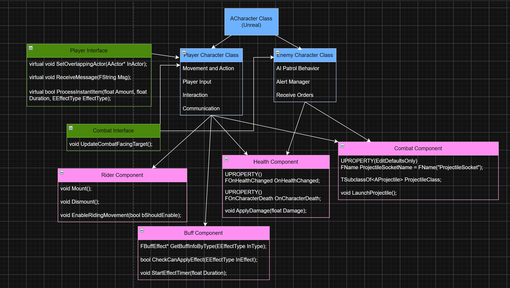
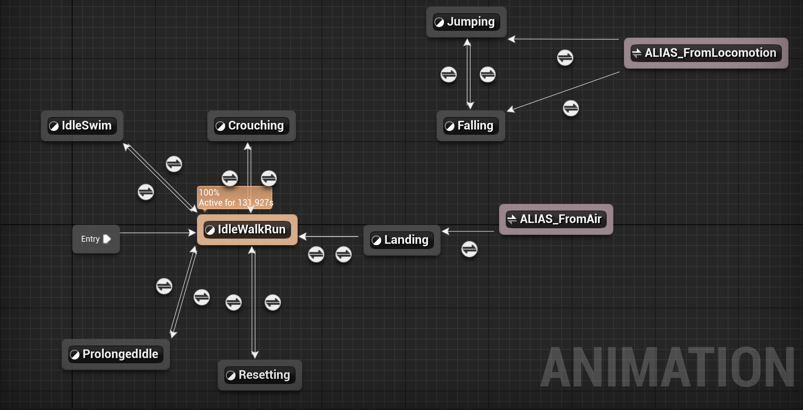
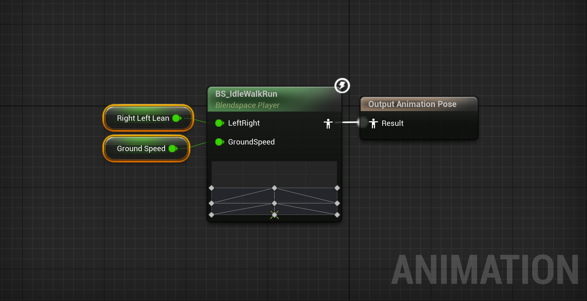
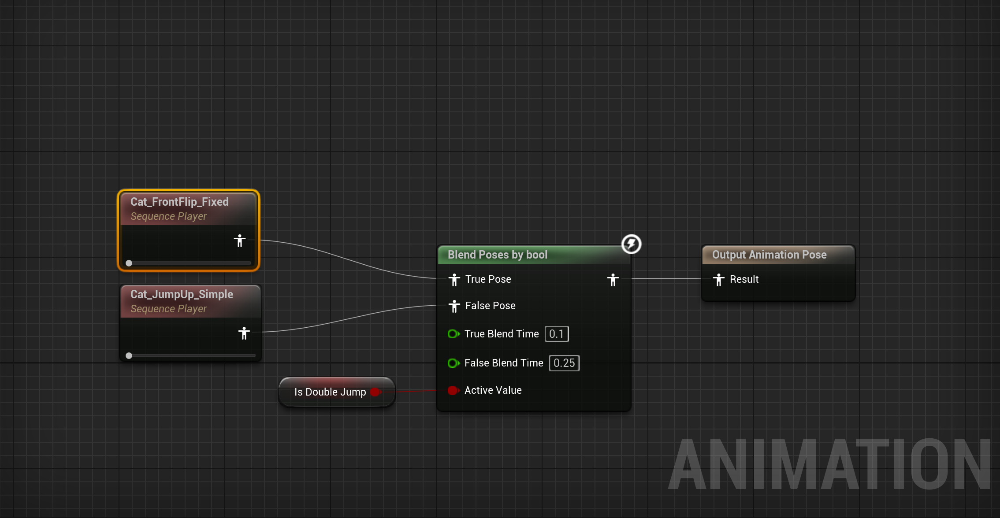
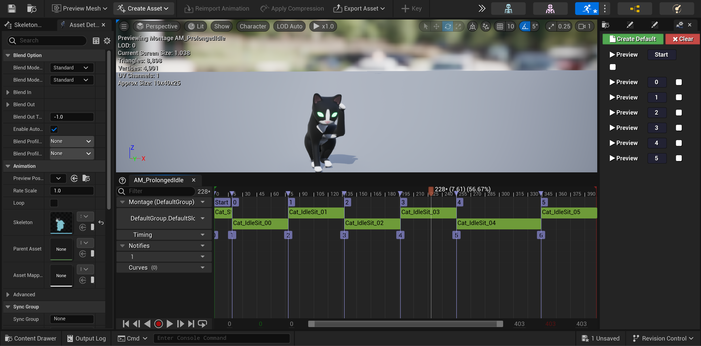

Zappy Cats: Character Design

C++, Unreal Engine 5 Blueprints
Design Goals...
Zappy Cats is a 3D puzzle platformer designed for self-paced exploration. I created a character Players would want to spend time as by first making it a cat, and then giving it exciting movements, broad interaction abilities, and expressive reactions to gameplay. Players can also experience the lazier side of cats and let it sit and entertain them with different idle animations, or switch into PhotoMode to take pictures of their surroundings.
Abilities...
- Walk, crouch, run, swim, jump, double jump, swat, shoot a laser, backflip while shooting a laser midair, create a shockwave, use a flashlight, and zoom the camera
- Take instant damage, take recurring damage from effects like fire, discern damage types and react with appropriate animation, die, respawn, and heal
- Receive lingering effects that modify gameplay while showing the coresponding icon and playing sound and visual effects
- Interact with static objects like buttons and doors, communicate with NPC's through a dialog overlay in the HUD, and ride around on mounts
- Switch into photo-mode and take screenshots, more on thathere.
- A prolonged-idling system ensures that after a duration of standing-idle, the cat sits down and switches between a random selection of sitting-idle animations.
Demo video showing the Player Character's various abilities.
Demo video showing the different buff/debuff Effects the Cat can receive through gameplay.
Approach...
This game needed to feel as silly and cat-like as possible. From the animations used to give life to actions, to the method of recharging, to the curve used to animate the cat's blinking, everything was designed with that in mind. I had a lot of fun finding ways to enhance these themes, but I also made sure the game actually worked well and felt smooth to play.
I created a set of classes, components, and interfaces that could be used between different character types without requiring they all inherit from the same base class. I wrote custom components for common character needs such as health, launching projectiles, riding mounts, and taking buff/debuff effects.
I used interfaces when appropriate to simplify the interactions between systems in the game. This makes getting the game's saved data, getting player information, or even updating rotations for animations much more efficient. An example where this is used is when a player overlaps with an instant effect item, that item can tell the player to apply its effect via the interface, without needing to cast to the player class and call a public function for it. This way we reduce coupling and the amount of header files included for every class. Each object only needs to know the least amount of information to accomplish their task.

Simplified class structure showing usage of components and interfaces between Player Character and Enemy Character classes.
Variation...
The Cat's main ability is to shoot a laser. It's used to attack enemies, break apart obstacles, and activate certain buttons. I felt like there was enough variety in how the laser mechanic was used, but not enough variation to the laser itself. I decided the behavior should change when the cat is wet or in water.
Instead of a focused beam of energy, it comes out in a shockwave that can send archs of electricity at up to 3 targets. This introduced new mechanics, like activating multiple buttons, or attacking multiple enemies at once.
To do this, when the Player tries to shoot a laser the code first checks if the Cat is wet(via the Buff Component) or if it's touching water to decide if it should generate a shockwave instead of a laser. I wanted the shockwave to work in shallow water, so I added detection in my Water Body Blueprint actor to trigger the Cat's "OnSurfaceTypeChanged" event. This is where we check that the Cat is touching water, and also where it changes the paw-step sound effect from a dry to wet sound.
Once it decides to generate a shockwave instead of a laser, it uses the Character Movement Component's IsSwimming() function to decide how far the shockwave can travel. I decided it should travel further while the cat is swimming. Note, I didn't use the IsSwimming() function in the first check because it only checks for water deep enough to swim in, which would've excluded shallow water.
It spawns the main shockwave VFX with its color set to the Cat's eye color, and the size dependent on the travel distance it determined before. Next it gets the Pawns within a sphere the size of the travel distance, and if they have the "Shockable" tag, it deals shock damage to them. It stores the first three of the hit Pawns, and spawns an electric arch VFX that reaches out from the Cat to the target. I limited it to three to save on performance.
Generating the "shockwave" meant creating a convincing VFX for the main "shocks" and an additional "electric arch" VFX that could be spawned per target and dynamically stretched, so that they appear to branch out from the Cat to the target. More on the art side of thathere.
Animation...
To integrate the Cat's abilities with their appropriate animations, I extended Unreal's Animation Instance class and used it for the Cat's Animation Blueprint. The Animation Instance tracks several of the Cat's relevant properties such as its current action (as an enum), whether it's swimming, how fast it's moving and in what direction, and many others. This is all used in the Cat's Animation Blueprint within a state tree to determine which animations to play. I also used BlendSpaces where appropriate, such as for transitioning between idling, walking, and running.


(L) Main State Tree for animating the Cat's various actions. (R) Blend Space for transitioning between walking and running based on ground speed and leaning direction.


(L) Jumping State takes a boolean to change the animation depending on if it's the first or second jump. (R) Animation Montage used to animate the cat during its Prolonged Idle state.
Prolonged Idle...
I created a modular and randomized idling system, where the cat will sit down and select random idle animations to play at random intervals. This avoided the monotony of a single idling animation and makes it easy to add, remove or otherwise edit the animations used. This also makes it so that if the Player is using Photo Mode, their cat will sit and essentially pose for the camera!
To implement this I added a few functions to check which stage of idling, if any, the cat was in. For instance if it's just entered prolonged idle, it will start the Prolonged Idle montage from the first animation, in which the cat sits down. If the cat has already been in the prolonged idle mode, it sets a random timer where upon completion a random choice from the remaining sections of the montage is selected.
Only the first section in the montage is linear, so the others can be played in any order and will all blend together. If it hasn't entered prolonged idle mode at all, it will simply log the time since the last player action, or scrub it as soon as the Player does something.
Note that the Cat cannot idle if it's crouching, falling, or otherwise occupied. But the Player can still pan the camera around without disturbing the idle.
Bonus...
If you've ever played any of the original Tomb Raider games you'll know that if you spam the jump and dodge keys you can get Lara Croft to perform a bunch of dazzling flips. It doesn't affect gameplay, but it's fun! I wanted to give my players something like that, but didn't have time to animate a thousand different types of flips. I thought it would be funny if when the Cat shoots a laser in the air it's pushed backward by "recoil" and does a backflip. It's not exactly the same, and it's not required to progress through any of the levels, but my play testers liked it!
Retrospective...
One of the things I really wanted to do for this character design was implement more custom animations and features. For instance, having the cat's head dynamically turn to track the crosshairs, or to leave pawprints behind per each paw, or even to give the player the option to put different hats and accessories on their cat. Unfortunately, I couldn't get the Cat's rig working properly in Unreal, and I wasn't able to access the skeletal mesh's bones individually. It worked in Blender but wouldn't import correctly to Unreal no matter what I did.
Next time I'll figure it out and get a working character rig in Unreal, but ultimately I think this was a good limitation to overcome. Not everything is going to work the way you want it to, so you have to find different ways of acheiving your design goals!